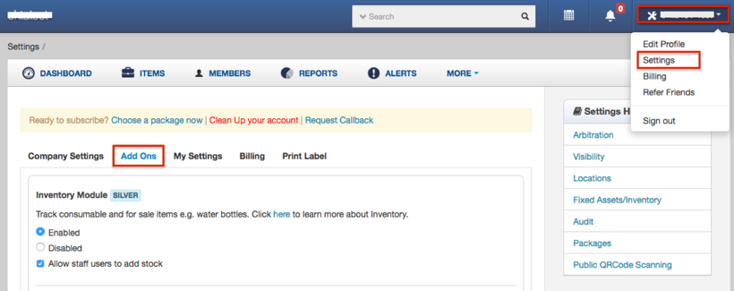
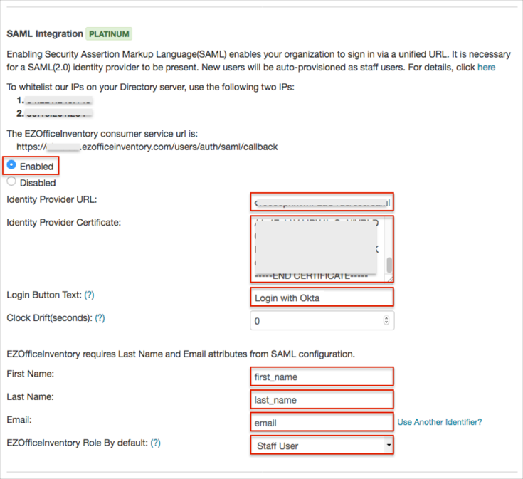
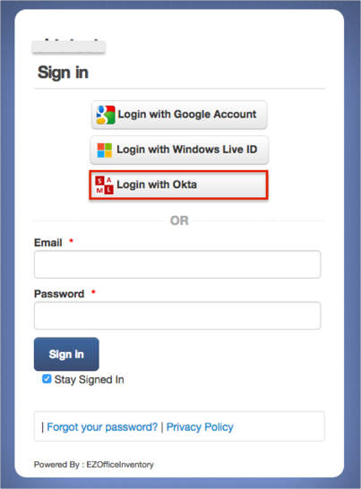

Login to EZOfficeInventory as an administrator.
Navigate to Account > Settings > Add Ons.

Scroll down and locate the SAML Integration section, and enter the following (see screen shot at end of step for reference):
Select the Enabled checkbox.
Identity Provider URL: Copy and paste the following:
Sign into the Okta Admin Dashboard to generate this variable.
Identity Provider Certificate: Copy and paste the following:
Sign into the Okta Admin Dashboard to generate this variable.
Login Button Text: Enter Login with Okta.
First Name attribute: Enter first_name.
Last Name attribute: Enter last_name.
Email attribute: Enter email.
EZOfficeInventory Role By default: Select either Staff User or Administrator
Click Update.

Done!
Notes:
SP-initiated flows, IDP-initiated flows, and Just In Time (JIT) provisioning are all supported.
Open the login URL: : https://[yourSubDomain].ezofficeinventory.com/users/sign_in.
Click Login with Okta.
